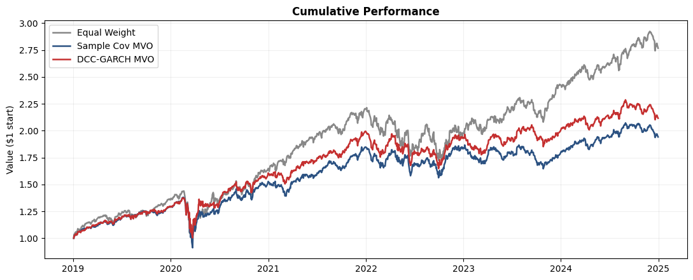

Time-varying covariance with dynamic volatility and correlation updates.
Author: Danny
Motivation
The previous methods assume that the covariance matrix is stable across a time period but this is obviously wrong. As an example think about when the COVID pandemic was first announced in March 2020 and stock correlations spiked due to panic selling.
Instead of using a static sample covariance matrix, what if we used a constantly changing covariance? This is where DCC-GARCH comes in! DCC-GARCH allows dynamic correlation between assets, essentially allowing the covariance matrix to adapt to changing market states.
Some examples of where this model would perform well are after a volatility shocks, during market stress, during sector rotation, and when correlations are moving quickly. However it can perform poorly when the estimation window is short, there are many assets relative to data, the parameter estimation is noisy, and the future market shifts in a way the recent past did not reflect.
Generalized Autoregressive Conditional Heteroskedasticity (GARCH) is a model that is used to forecast volatility using time series data.
Dynamic Conditional Correlation (DCC) is a GARCH model that estimates time-varying correlations between financial assets.
The DCC-GARCH estimator decomposes the traditional covariance matrix into time-varying volatilities and time-varying correlations. The GARCH component captures the changing variance between assets and the DCC component updates the correlation structure using standardized returns.
Derivation
Given a window of returns:
Step 1: For each asset \(i\), estimate a GARCH(1,1) variance path \(h_{i,t}\)
Step 7: Output the conditional covariance forecast
\[\hat{\Sigma}_{t} = H_t = D_t R_t D_t\]
Show code
# ── §2 Setup & Estimator ──────────────────────────────────import numpy as np, pandas as pd, matplotlib.pyplot as plt, warningsfrom scipy.optimize import minimizewarnings.filterwarnings('ignore')# ── Load the shared universe (same 50 stocks for every module) ──prices = pd.read_csv('data/prices.csv', index_col=0, parse_dates=True)returns = pd.read_csv('data/returns.csv', index_col=0, parse_dates=True)N, T = returns.shape[1], returns.shape[0]print(f"Loaded {N} assets × {T} days")def estimate_covariance(returns_df):"""Returns an N×N covariance matrix using DCC-GARCH. Input: returns_df (pd.DataFrame, T×N daily returns) Rows = time, columns = assets Output: H_t: N×N numpy array (symmetric, positive semi-def) Estimated conditional covariance matrix """# Step 0: Convert data into a matrix# X is returns matrix, T is number of time periods, N is number of assets, eps is a tiny number to avoid numerical problems later X = returns_df.values# Demean daily returns X = X - X.mean(axis=0, keepdims=True) T, N = X.shape eps =1e-8# Step 1: Estimate each asset's volatility using GARCH(1,1)# alpha is the weighting of how much of the previous day's shock is taken into account, beta is the weighting of how persistent volatility is# H_var will store the estimated variance of asset i at time t using GARCH alpha =0.05 beta =0.90 H_var = np.zeros((T, N))for i inrange (N): r = X[:, i]# Sample Variance h =max(np.var(r), eps) H_var[0, i] = h# Calculate omega omega =max((1- alpha - beta) * np.var(r), eps)# GARCH formulafor t inrange(1, T): h = omega + alpha * (r[t-1] **2) + beta * h H_var[t, i] =max(h, eps)# Step 2: Forecast next-step variances and construct D_t# D_t is the diagonal matrix of forecasted standard deviations h_next = np.zeros(N)for i inrange(N): r = X[:, i] h_last = H_var[-1, i] var0 = np.var(r) omega =max((1- alpha - beta) * var0, eps) h_next[i] =max(omega + alpha * (r[-1] **2) + beta * h_last, eps) sigma_t = np.sqrt(h_next) D_t = np.diag(sigma_t)# Step 3: Standardize returns# Z is the matrix of standardized returns Z = X / np.sqrt(H_var)# Step 4: Estimate the long-run correlation target# Q_bar is the long-run dependence target estimated from standardized returns Q_bar = np.cov(Z.T)# Small adjustment to avoid singularity Q_bar = Q_bar + eps * np.eye(N)# Step 5: Run the DCC recursion# Choose a = 0.02 and b = 0.97 since they represent a low short-term reaction, strong persistence, and a + b < 1 so the process stays stable. a =0.02 b =0.97 Q = Q_bar.copy()for t inrange(1, T): z_prev = Z[t-1].reshape(-1, 1)# (1 - a - b) * Q_bar is the pull to long-run average correlation, # a * (z_prev @ z_prev.T) is the reaction to the previous day's co-movement shock# b * Q is the persistence from previous day's estimate Q = (1- a - b) * Q_bar + a * (z_prev @ z_prev.T) + b * Q# Forecast the next-step correlation matrix z_last = Z[-1].reshape(-1, 1) Q = (1- a - b) * Q_bar + a * (z_last @ z_last.T) + b * Q# Step 6: Convert Q into a proper correlation matrix (R_t) by normalizing diag_q = np.sqrt(np.maximum(np.diag(Q), eps)) D_inv = np.diag(1.0/ diag_q) R = D_inv @ Q @ D_inv R =0.5* (R + R.T)# Step 7: Rebuild the covariance matrix H_t = D_t @ R @ D_t H_t =0.5* (H_t + H_t.T)# Step 8: Make sure output is positive semi-definite / numerically stable eigvals, eigvecs = np.linalg.eigh(H_t) eigvals = np.maximum(eigvals, eps) H_t = eigvecs @ np.diag(eigvals) @ eigvecs.Treturn H_t# ── Quick sanity check (don't remove) ──cov_test = estimate_covariance(returns.iloc[:252])assert cov_test.shape == (N, N), f"Expected ({N},{N}), got {cov_test.shape}"assert np.allclose(cov_test, cov_test.T), "Not symmetric"assert np.all(np.linalg.eigvalsh(cov_test) >-1e-10), "Negative eigenvalues"print("✓ Estimator passes sanity checks")
# ── §3 Backtest ───────────────────────────────────────────# This cell is ready to go — no changes needed.# It runs a rolling monthly backtest comparing three strategies:# 1. Equal Weight (1/N — naive baseline)# 2. Sample Cov MVO (min-variance using raw sample covariance)# 3. DCC-GARCH MVO (min-variance using DCC-GARCH_covariance) def min_variance_portfolio(cov):"""Minimum-variance portfolio (long-only, fully invested).""" n = cov.shape[0] w0 = np.ones(n) / n res = minimize(lambda w: w @ cov @ w, w0, method='SLSQP', bounds=[(0, 1)] * n, constraints=[{'type': 'eq', 'fun': lambda w: w.sum() -1}], options={'ftol': 1e-12, 'maxiter': 1000})return res.x if res.success else w0LOOKBACK =252# 1 year estimation windowREBAL =21# rebalance every ~1 monthMIN_HIST =252# need at least 1 year before first tradedates = returns.index[MIN_HIST:]n = returns.shape[1]pv = {'Equal Weight': [1.0], 'Sample Cov MVO': [1.0], 'DCC-GARCH MVO': [1.0]}cw = {k: np.ones(n) / n for k in pv}for i, date inenumerate(dates): idx = returns.index.get_loc(date)if i % REBAL ==0: window = returns.iloc[idx - LOOKBACK : idx] cw['Equal Weight'] = np.ones(n) / n cw['Sample Cov MVO'] = min_variance_portfolio(window.cov().values) cw['DCC-GARCH MVO'] = min_variance_portfolio(estimate_covariance(window)) day_ret = returns.iloc[idx].valuesfor k in pv: pv[k].append(pv[k][-1] * (1+ cw[k] @ day_ret))portfolio_df = pd.DataFrame(pv, index=[dates[0] - pd.Timedelta(days=1)] +list(dates))print(f"✓ Backtest complete — {len(dates)} trading days")
✓ Backtest complete — 1507 trading days
Show code
# ── §4 Results ────────────────────────────────────────────C = {'Equal Weight':'#888','Sample Cov MVO':'#2c5282','DCC-GARCH MVO':'#c53030'}fig, ax = plt.subplots(figsize=(11, 4.5))for k in portfolio_df: ax.plot(portfolio_df.index, portfolio_df[k], label=k, color=C[k], lw=1.8)ax.set_ylabel('Value ($1 start)'); ax.set_title('Cumulative Performance', fontweight='bold')ax.legend(loc='upper left'); ax.grid(True, alpha=0.2); plt.tight_layout(); plt.show()# Metricsdef metrics(v): r = v.pct_change().dropna() ar, av = r.mean()*252, r.std()*np.sqrt(252)return {'Ret%': ar*100, 'Vol%': av*100, 'Sharpe': ar/av if av>0else0,'MaxDD%': ((v/v.cummax())-1).min()*100}display(pd.DataFrame({k: metrics(portfolio_df[k]) for k in portfolio_df}).T.round(2))

Ret%
Vol%
Sharpe
MaxDD%
Equal Weight
19.00
19.86
0.96
-34.27
Sample Cov MVO
12.57
17.19
0.73
-33.96
DCC-GARCH MVO
13.92
16.64
0.84
-26.94
Interpretation
The DCC-GARCH estimator improves on the covariance calculation in serveral ways. Compared to the Sample Covariance MVO, the DCC-GARCH estimator has a higher annual return (13.90% vs 12.57%), lower volatility (16.64% vs 17.19%), a higher Sharpe ratio (0.84 vs 0.73), and also meaningfully reduces maximum drawdown (−33.96% vs −26.94%). This suggests the dynamic covariance estimate helps the optimizer allocate risk more efficiently.
The improvement likely occurs because DCC-GARCH accounts for time-varying volatility and correlations. In periods of stress, correlations between assets often increase and volatility spikes. By updating these quantities dynamically, the model can better capture the current risk environment than a static sample covariance matrix.T
However, the estimator still underperforms compared to the Equal Weight portfolio in terms of total return. This highlights a common limitation of minimum-variance strategies, they prioritize risk reduction over return maximization. Additionally, the simplified DCC implementation may introduce estimation noise when applied to a large universe of assets.
Takeaway: Dynamic covariance estimation improves the efficiency and risk profile of the minimum-variance portfolio relative to the sample covariance baseline, even though it does not outperform a simple equal-weight strategy in raw returns.
Implementation Notes
We want to find \(H_t\), the conditional covariance matrix of asset returns at time \(t\):
where \(r_t \in \mathbb{R}^N\) is the vector of asset returns and \(\mathcal{F}_{t-1}\) is the information set at time \(t-1\).
Step 1: Decompose the covariance matrix
Separate covariance into volatilities and correlations:
\[H_t = D_t \, R_t \, D_t\]
where \(D_t = \operatorname{diag}\!\left(\sqrt{h_{1,t}},\, \sqrt{h_{2,t}},\, \ldots,\, \sqrt{h_{N,t}}\right)\) is the diagonal matrix of conditional standard deviations, and \(R_t\) is the time-varying correlation matrix.
Step 2: Model each asset’s variance with GARCH(1,1)
For each asset \(i\), let the return innovation be \(\varepsilon_{i,t}\). Its conditional variance is modeled as
Divide each innovation by its conditional volatility to isolate cross-sectional dependence:
\[z_t = D_t^{-1}\varepsilon_t\]
These standardized residuals have unit conditional variances, so the remaining dependence is captured entirely by correlation.
Step 4: Define the dynamic correlation process
Let \(\bar{Q}\) be the unconditional covariance matrix of the standardized residuals \(z_t\). The DCC(1,1) model updates the auxiliary matrix \(Q_t\) as: